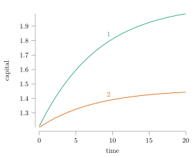
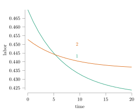
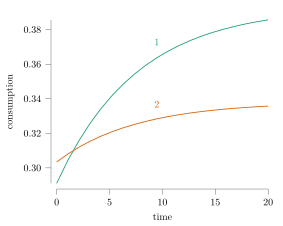

Simple comparative statics
Again, this model is much to simplified to give us any realistic insights into economic policy, so we just demonstrate the comparison of transients.
First, we set up the work environment. Accessors.jl is a neat library for modifying elements of a container, here our model.
julia> using NumericalExample, Accessors, Miter
We pick some reasonable model parameters (again, this is not calibrated to anything realistic, but parameters broadly match usual RBC targets), and solve the model.
julia> model = model_parameters(; α = 0.33, β = 0.95, θ = 0.5, δ = 0.05, τ_k = 0.1, τ_ℓ = 0.4)NumericalExample.model_parameters(; θ = 0.5, β = 0.95, α = 0.33, δ = 0.05, τ_k = 0.1, τ_ℓ = 0.4)julia> k0 = 1.21.2julia> sol = solve_model(model, k0)model solution converged
Then experiment with raising capital taxes from 10% to 30%.
julia> model2 = @set model.τ_k = 0.3NumericalExample.model_parameters(; θ = 0.5, β = 0.95, α = 0.33, δ = 0.05, τ_k = 0.3, τ_ℓ = 0.4)julia> sol2 = solve_model(model2, k0)model solution converged
For plotting, a simple utility function we wrote up in this package. It uses Miter.jl, but any Julia plotting solution would work fine. We use a range of evenly spaced values 20 years, and label our models:
julia> ts = range(0, 20; length = 20)0.0:1.0526315789473684:20.0julia> graph_labels = ["baseline", math"\mathrm{capital\ tax}\uparrow"]2-element Vector{Any}: "baseline" Miter.RawLaTeX.LaTeX("\$\\mathrm{capital\\ tax}\\uparrow\$", false)
Let's plot the evolution of capital first.
julia> plot_vs_time(t -> [sol.k̃(t), sol2.k̃(t)], ts, "capital"; graph_labels);
With higher taxes, the steady state is lower, so capital converges to a lower value.

If we look at labor instead, it is apparent that labor is subtituted for capital in production.
julia> plot_vs_time(t -> [sol.ℓ̃(t), sol2.ℓ̃(t)], ts, "labor"; graph_labels);

However, consumption is lower when capital taxes are higher, since the economy produces less.
julia> plot_vs_time(t -> [sol.c̃(t), sol2.c̃(t)], ts, "consumption"; graph_labels);

However, as expected, tax revenue increases. Since we did not define the utility for the government expenditure, we do not compare welfare.
julia> plot_vs_time(t -> [tax_revenue(model, sol.k̃(t), sol.ℓ̃(t)), tax_revenue(model2, sol2.k̃(t), sol2.ℓ̃(t))], ts, "tax revenue"; graph_labels);